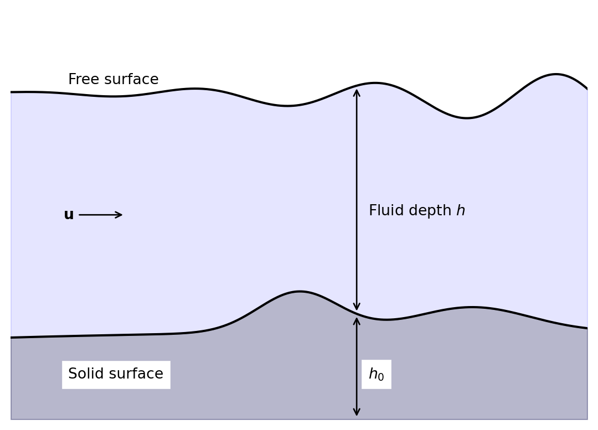

1 Climate models
1.1 Navier-Stokes Equations
The standard models of gases and fluids rely on the Navier-Stokes equations. These express the conservation of energy, momentum, and particle number of the material coupled to gravity and allowing for sources of energy and diffusion. The form we will use can be written
\[ \begin{aligned} \text{The Lagrangian derivative} && \frac{D \Psi}{D t} &= \frac{\partial \Psi}{\partial t} + \mathbf{u} \cdot \nabla \Psi \\ \text{Momentum} && \frac{D \mathbf{u}}{D t} &= -2 \symbf{\Omega} \times \mathbf{u} - \frac{\nabla p}{\rho} + \mathbf{g} + \\ &&& \quad \mu_u \left( \nabla^2 \mathbf{u} + \frac{1}{3} \nabla (\nabla \cdot \mathbf{u}) \right) \\ \text{Continuity} && \frac{D \rho}{D t} + \rho \nabla \cdot \mathbf{u} &= 0 \\ \text{Energy} && \frac{D \theta}{D t} &= Q + \mu_{\theta} \nabla^2 \theta \end{aligned} \tag{1.1}\]
To close the system we need to link the microphysical behaviour of the particles making up the material to the forces they impose, through an equation of state. An example would be the perfect gas law \(p = \rho R T\).
The various symbols defined above are outlined in the following table.
| Symbol | Meaning |
|---|---|
| \(\mathbf{u}\) | Wind vector |
| \(t\) | Time |
| \(\symbf{\Omega}\) | Rotation rate of planet |
| \(\rho\) | Density of air |
| \(p\) | Atmospheric pressure |
| \(\mathbf{g}\) | Gravity vector (downwards) |
| \(\theta\) | Potential temperature, \(T (p_0/p)^{\kappa}\) |
| \(\kappa\) | heat capacity ratio \(\simeq 1.4\) |
| \(Q\) | Source of heat |
| \(\mu_u, \mu_{\theta}\) | Diffusion coefficients |
1.2 Shallow Water Equations
The Navier-Stokes equations are complex and accurately captures physics (such as acoustic waves) that has minimal impact on climate models, and whose numerical solution would impose problematic constraints on the cost and accuracy of the approximation. One simpler model is the shallow water equations (SWE). The assumptions needed to derive the SWE are
- Horizontal length scale \(\gg\) vertical length scale;
- Very small vertical velocities.
To get the SWE, take the Navier-Stokes equations over orography and depth integrate. This gives the system
\[ \begin{aligned} \frac{D \mathbf{u}}{D t} &= - \symbf{\Omega} \times \mathbf{u} - g \nabla (h + h_0) + \mu_u \nabla^2 \mathbf{u}, \\ \frac{D h}{D t} + h \nabla \cdot \mathbf{u} &= 0. \end{aligned} \tag{1.2}\]
In the SWE the terms are
| \(\mathbf{u}\) | Depth integrated wind vector |
| \(t\) | Time |
| \(\symbf{\Omega}\) | Rotation rate of planet |
| \(h\) | Fluid depth |
| \(g\) | Acceleration due to gravity (in the direction of the depth integration) |
| \(\nabla\) | Gradients in the horizontal directions |
| \(h_0\) | height of the bottom topography with respect to a reference point |
| \(\mu_u\) | Diffusion of momentum |
Exercise 1.1 Considering the meaning of the terms in the momentum equation in (Equation 1.1), what are the meanings of the terms of the momentum equation of the SWE?
1.3 Linearised Shallow Water Equations
The Shallow Water Equations are simpler than the Navier-Stokes equations but are still nonlinear. Dropping the nonlinear terms is an over-simplification for real models, but can be useful when developing methods. To linearise the SWE we assume that
- \(\mathbf{u} = (u, v, 0)^T\) is small;
- \(2 \symbf{\Omega} = (0, 0, f)^T\);
- \(h = H + h'\), where \(H\) is uniform in space and time and \(h'\) is small;
- the product of two small variables is ignored (even if one or both are inside a differential);
- \(h_0\) and \(\mu_u\) are ignored.
This gives the linearised equations for \(u, v\), and \(h'\), expressed in terms of \(f\) (rather than \(\symbf{\Omega}\)), as
\[ \begin{aligned} \frac{\partial u}{\partial t} &= f v - g \frac{\partial h'}{\partial x}, \\ \frac{\partial v}{\partial t} &= -f u - g \frac{\partial h'}{\partial y}, \\ \frac{\partial h'}{\partial t} &= -H \left( \frac{\partial u}{\partial x} + \frac{\partial v}{\partial y} \right). \end{aligned} \tag{1.3}\]
1.4 Advection
If the wind vector \(\mathbf{u}\) is known (through, for example, the solution of the Navier-Stokes or Shallow Water equations) then we can solve for the transport of a property or particle that is moved by the fluid material. A standard example in climate modelling is pollution, where the concentration of the pollutant is represented by the scalar field \(\Psi\). The pollutant then obeys the advection equation
\[ \underbrace{\frac{D \Psi}{D t}}_{(1)} = \underbrace{\frac{\partial \Psi}{\partial t}}_{(2)} + \underbrace{\mathbf{u} \cdot \nabla \Psi}_{(3)} = \underbrace{S}_{(4)} + \underbrace{\mu_{\Psi}\nabla^2 \Psi}_{(5)}. \tag{1.4}\]
The terms here are
- the Lagrangian derivative of the pollution concentration,
- the rate of change of the pollution concentration at a fixed point in space,
- the advection of the pollution concentration by the wind velocity,
- the source or sink of pollution concentration,
- the diffusion of the pollution concentration.
Frequently when we refer to the linear advection equation we mean the case with no source or sink of pollution, nor any diffusion. In this case we have
\[ \frac{D \Psi}{D t} = \frac{\partial \Psi}{\partial t} + \mathbf{u} \cdot \nabla \Psi = 0. \tag{1.5}\]
We typically consider the wind velocity \(\mathbf{u}\) to be a fixed function of time, and sometimes simplify further to make it spatially constant. Note now that if \(\nabla \cdot \mathbf{u} = 0\) then the linear advection equation can be written in flux form
\[ \frac{\partial \Psi}{\partial t} + \nabla \cdot \left( \Psi \mathbf{u} \right) = 0. \tag{1.6}\]
This is a special case of an equation in conservation law form,
\[ \frac{\partial \mathbf{q}}{\partial t} + \nabla \cdot \mathbf{f} \left( \mathbf{q} \right) = 0, \]
for which special numerical methods can be constructed.